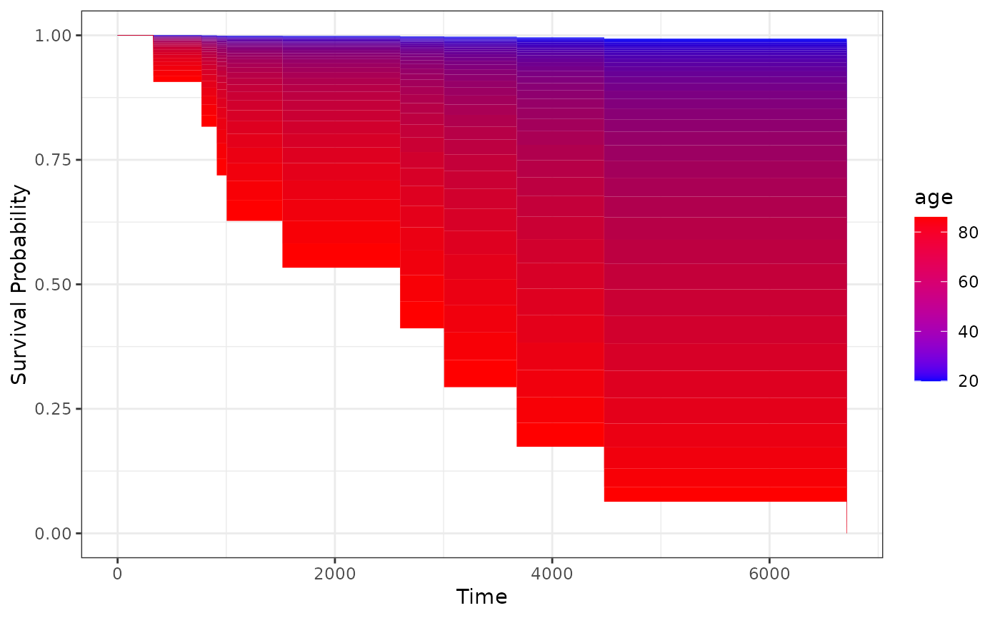
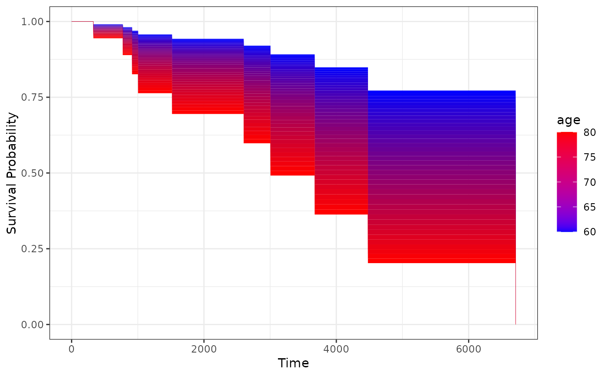
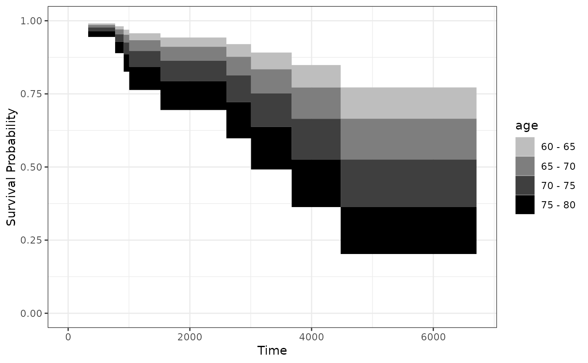

Plot a Survival Area Plot for the Effect of a Continuous Variable on a Time-To-Event Outcome
plot_surv_area.RdUsing a previously fit time-to-event model, this function plots a survival curve or CIF area plot. Instead of plotting value-specific curves, the probability of interest is represented as an area as a function of time, where the color changes according to the continuous variable.
Usage
plot_surv_area(time, status, variable, group=NULL,
data, model, cif=FALSE,
na.action=options()$na.action,
horizon=NULL, fixed_t=NULL, max_t=Inf,
start_color="blue", end_color="red", alpha=1,
discrete=FALSE, bins=ifelse(discrete, 10, 40),
sep_lines=FALSE, sep_color="black",
sep_size=0.1, sep_linetype="solid",
sep_alpha=alpha, xlab="Time",
ylab="Survival Probability", title=NULL,
subtitle=NULL, legend.title=variable,
legend.position="right",
gg_theme=ggplot2::theme_bw(),
facet_args=list(), label_digits=NULL,
transition_size=0.01, kaplan_meier=FALSE,
km_size=0.5, km_linetype="solid", km_alpha=1,
km_color="black", monotonic=TRUE, ...)Arguments
- time
A single character string specifying the time-to-event variable. Needs to be a valid column name of a numeric variable in
data.- status
A single character string specifying the status variable, indicating if a person has experienced an event or not. Needs to be a valid column name of a numeric or logical variable in
data.- variable
A single character string specifying the continuous variable of interest, for which the survival curves should be estimated. This variable has to be contained in the
data.framethat is supplied to thedataargument.- group
An optional single character string specifying a factor variable in
data. When used, the plot is created conditional on this factor variable, meaning that a facetted plot is produced with one facet for each level of the factor variable. Seecurve_contfor a detailed description of the estimation strategy. Set toNULL(default) to use no grouping variable.- data
A
data.framecontaining all required variables.- model
A model describing the time-to-event process (such as an
coxphmodel). Needs to includevariableas an independent variable. It also has to have an associatedpredictRiskmethod. See?predictRiskfor more details.- cif
Whether to plot the cumulative incidence (CIF) instead of the survival probability. If multiple failure types are present, the survival probability cannot be estimated in an unbiased way. This function will always return CIF estimates in that case.
- na.action
How missing values should be handled. Can be one of:
na.fail,na.omit,na.pass,na.excludeor a user-defined custom function. Also accepts strings of the function names. See?na.actionfor more details. By default it uses the na.action which is set in the global options by the respective user.- horizon
A numeric vector containing a range of values of
variablefor which the survival curves should be calculated orNULL(default). IfNULL, the horizon is constructed as a sequence from the lowest to the highest value observed invariablewith 40 equally spaced steps.- fixed_t
A numeric vector containing points in time at which the survival probabilities should be calculated or
NULL(default). IfNULL, the survival probability is estimated at every point in time at which an event occurred.- max_t
A number indicating the latest survival time which is to be plotted.
- start_color
The color used for the lowest value in
horizon. This and theend_colorargument can be used to specify custom continuous color scales used in the plot. For example, if a black and white plot is desired, the user can setstart_color="white"andend_color="black". See?scale_color_gradientfor more information.- end_color
The color used for the highest value in
horizon. See argumentstart_color.- alpha
The transparency level of the main plot.
- discrete
Whether to plot the area as a single continuously shaded area (default) or as multiple discrete blocks. The blocks correspond to ranges (such as 5-10). This only really changes the style of the legend and decreases the default value of
binsto make the discrete blocks visable.- bins
The number of bins the survival area should be divided into. In a nutshell, this function simply estimates a lot of covariate specific curves and colors the area between them on a graded scale. If many bins are used, this gives the appearance of a single shaded area, changing continuously. By using only a few bins however, the specific covariate values might be easier to read off the plot. See also the
discreteargument.- sep_lines
Whether to draw lines between the individual area segments or not. When
discrete=TRUEis used, this might be a good option to help visually separate the segments.- sep_color
The color of the separator lines. Ignored if
sep_lines=FALSE.- sep_size
The size of the separator lines. Ignored if
sep_lines=FALSE.- sep_linetype
The linetype of the separator lines. Ignored if
sep_lines=FALSE.- sep_alpha
The transparency level of the separator lines. Ignored if
sep_lines=FALSE.- xlab
A character string used as the x-axis label of the plot.
- ylab
A character string used as the y-axis label of the plot.
- title
A character string used as the title of the plot.
- subtitle
A character string used as the subtitle of the plot.
- legend.title
A character string used as the legend title of the plot.
- legend.position
Where to put the legend. See
?themefor more details.- gg_theme
A ggplot2 theme which is applied to the plot.
- facet_args
A named list of arguments that are passed to the
facet_wrapfunction call when creating a plot separated by groups. Ignored ifgroup=NULL. Any argument except thefacetsargument of thefacet_wrapfunction can be used. For example, if the user wants to allow free y-scales, this argument could be set tolist(scales="free_y").- label_digits
A single number specifying to how many digits the labels of the plot should be rounded or
NULL(default). IfNULL, no rounding is performed and the exact values are presented. This argument is only used whendiscrete=TRUEis used and ignored otherwise.- transition_size
A single number > 0 specifying the
sizeparameter in thepammtools::geom_stepribbon()calls wheneverdiscrete=FALSEis used. This size parameter defines the size of the outline of each individual element of the plot. Can usually be left as is. Sometimes when saving these graphics to.pngor.jpgfiles it may be useful to increase this value to avoid weird looking lines between the areas.- kaplan_meier
Whether to add a standard Kaplan-Meier estimator to the plot or not. If
groupis defined, the Kaplan-Meier estimator will be stratified by the grouping variable. Ifcif=TRUEwas used, the cumulative incidence will be displayed instead of the survival curve.- km_size
The size of the Kaplan-Meier line. Ignored if
kaplan_meier=FALSE.- km_linetype
The linetype of the Kaplan-Meier line. Ignored if
kaplan_meier=FALSE.- km_alpha
The transparency level of the Kaplan-Meier line. Ignored if
kaplan_meier=FALSE.- km_color
The color of the Kaplan-Meier line. Ignored if
kaplan_meier=FALSE.- monotonic
A single logical value specifying whether the relationship between the
variableand the survival probability is monotonic or not. If there are non-monotonic effects, the areas will be drawn on top of each other when usingmonotonic=TRUE(default). By setting this argument toFALSE, the plot will be divided into multiple facets. Each facet contains the plot for a certain range of values of thevariable, in which the effect is monotonic. Thegroupargument may not be used withmonotonic=FALSE. This also only works for continuously shaded ares, e.g. with horizons containing at least 40 distinct values.- ...
Further arguments passed to
curve_cont.
Details
This function is very similar to a contour plot (see plot_surv_contour), but with the probability of interest on the y-axis and the color representing the values of the continuous variable of interest. The main advantage of this type of plot is, that it has the same structure as a usual Kaplan-Meier plot. The only difference is that instead of single curves stratified by some variable, the curves are plotted as an area instead.
This is achieved by estimating value-specific curves over the whole range of the continuous covariate using direct standardization and a previously fitted time-to-event model (see curve_cont). The area between those curves is then simply filled in (using the geom_stepribbon function from the pammtools package). By using a big number of individual curves, the appearance of a continuously shaded area is created. This is done by default when using the argument discrete=FALSE. By using discrete=TRUE, only a small number of value-specific curves are estimated, resulting in only a few discrete bins. When using only a few bins, the output is therefore even closer to a contour plot.
The major downside of this plotting method is that it has problems handling non-monotone effects. Curved relationships between the variable and the survival time result in the areas being plotted on top of each other in a standard survival area plot. By using monotonic=FALSE, the user may still use this function for nonlinear effects. This strategy is not optimal when the relationship is very complex, resulting in lots of facets in the plot. We recommend using either the plot_surv_contour, plot_surv_heatmap or plot_surv_matrix functions in this case.
Note
When saving this graphic to .png or .jpg files while using discrete=FALSE, they may sometimes contain some barely visible (but very annoying) lines. Those are the divisions between the areas the plot is made off. This only happens when saving this plot to non-vector graphics, which is why we recommend saving it to .pdf or similar file types only. If other file types are necessary, one can set the transition_size argument to higher values (such as 0.5 or 1) to remove this problem as well.
References
Robin Denz, Nina Timmesfeld (2023). "Visualizing the (Causal) Effect of a Continuous Variable on a Time-To-Event Outcome". In: Epidemiology 34.5
Examples
library(contsurvplot)
library(riskRegression)
library(survival)
library(ggplot2)
library(pammtools)
#>
#> Attaching package: ‘pammtools’
#> The following object is masked from ‘package:stats’:
#>
#> filter
# using data from the survival package
data(nafld, package="survival")
# take a random sample to keep example fast
set.seed(42)
nafld1 <- nafld1[sample(nrow(nafld1), 100), ]
# fit cox-model with age
model <- coxph(Surv(futime, status) ~ age, data=nafld1, x=TRUE)
# plot effect of age on survival using defaults
plot_surv_area(time="futime",
status="status",
variable="age",
data=nafld1,
model=model)

# plot it only for 60 to 80 year old people
plot_surv_area(time="futime",
status="status",
variable="age",
data=nafld1,
model=model,
horizon=seq(60, 80, 0.5))

# plot it only for 60 to 60 year old people, using discrete bins
# and a black and white color scale
plot_surv_area(time="futime",
status="status",
variable="age",
data=nafld1,
model=model,
horizon=seq(60, 80, 5),
discrete=TRUE,
start_color="grey",
end_color="black")
